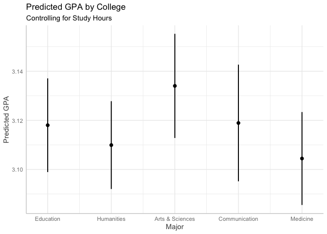
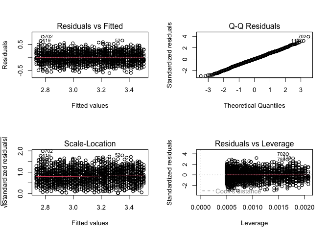
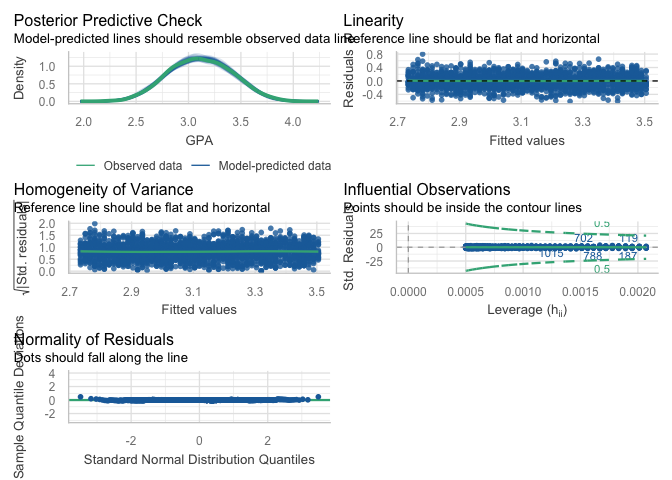
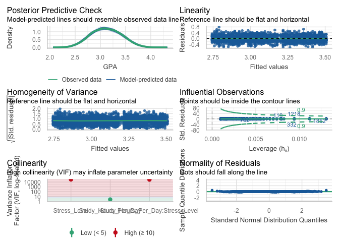

Statistics
Dr. Ayse D. Lokmanoglu Lecture 6, (B) Feb 25, (A) Mar 2
Lecture 6 Table of Contents
| Section | Topic |
|---|---|
| 1 | Hypothesis Testing |
| 1.1 | What is Hypothesis Testing? |
| 1.2 | T-Test: Comparing Two Groups |
| 1.3 | Visualizing T-Tests |
| 1.4 | ANOVA: Comparing Multiple Groups |
| 1.5 | Visualizing ANOVA |
| 2 | Regression Models |
| 2.1 | Simple Linear Regression |
| 2.2 | Interpreting Regression Output |
| 2.3 | Multiple Linear Regression |
| 2.4 | Dummy Variables |
| 3 | Visualizing Regression |
| 3.1 | Scatter Plots with Regression Lines |
| 3.2 | Coefficient Plots |
| 3.3 | Marginal Effects Plots |
| 4 | Generalized Linear Models |
| 4.1 | When to Use GLMs |
| 4.2 | Poisson Regression |
| 5 | Interaction Terms |
| 5.1 | What are Interactions? |
| 5.2 | Visualizing Interactions |
| 6 | Model Diagnostics |
| 6.1 | Assumptions of Linear Regression |
| 6.2 | Checking Assumptions |
| 6.3 | The performance Package |
ALWAYS load our libraries first
library(tidyverse)
library(dplyr)
library(ggplot2)
library(broom)Setup: Create Example Dataset
We’ll use the same student dataset throughout this lecture:
# Create dataset
student_data <- read_csv("https://raw.githubusercontent.com/aysedeniz09/IntroCSS/refs/heads/main/data/student_lifestyle_dataset.csv")
head(student_data)## # A tibble: 6 × 12
## Student_ID Study_Hours_Per_Day Extracurricular_Hours_Per…¹ Sleep_Hours_Per_Day
## <dbl> <dbl> <dbl> <dbl>
## 1 1 6.9 3.8 8.7
## 2 2 5.3 3.5 8
## 3 3 5.1 3.9 9.2
## 4 4 6.5 2.1 7.2
## 5 5 8.1 0.6 6.5
## 6 6 6 2.1 8
## # ℹ abbreviated name: ¹Extracurricular_Hours_Per_Day
## # ℹ 8 more variables: Social_Hours_Per_Day <dbl>,
## # Physical_Activity_Hours_Per_Day <dbl>, GPA <dbl>, Stress_Level <chr>,
## # college <chr>, GPA_Level <chr>, Stress_Level2 <chr>, books_read <dbl>1. Hypothesis Testing
1.1 What is Hypothesis Testing?
Hypothesis testing allows you to make inferences about populations based on sample data. It answers: “Is the pattern I see in my data real, or could it be due to chance?”
Key Components:
- Null Hypothesis (H₀): No effect or difference exists
- Alternative Hypothesis (H₁): An effect or difference exists
- p-value: Probability of observing your data if H₀ is true
- Significance level (α): Threshold for rejecting H₀ (usually 0.05)
Decision Rule:
- If p < α: Reject H₀ (result is statistically significant)
- If p ≥ α: Fail to reject H₀ (result is not statistically significant)
Important: “Fail to reject” ≠ “Accept H₀”. We never prove the null hypothesis is true!
1.2 T-Test: Comparing Two Groups
A t-test compares the means of two groups to determine if they are significantly different.
Types of T-Tests:
| Type | Use Case | Example |
|---|---|---|
| Independent | Two unrelated groups | Males vs. Females |
| Paired | Same subjects, two conditions | Before vs. After treatment |
| One-sample | Sample vs. known value | Sample mean vs. population mean |
Example: Do male and female CS students study different hours?
# Filter for CS students
AS_students <- student_data |>
filter(college == "Arts & Sciences")
# Independent t-test
t_test_result <- t.test(Study_Hours_Per_Day ~ Stress_Level2, data = AS_students)
t_test_result##
## Welch Two Sample t-test
##
## data: Study_Hours_Per_Day by Stress_Level2
## t = 15.245, df = 310.19, p-value < 2.2e-16
## alternative hypothesis: true difference in means between group High and group LowModerate is not equal to 0
## 95 percent confidence interval:
## 1.526264 1.978624
## sample estimates:
## mean in group High mean in group LowModerate
## 8.362941 6.610497Interpreting the Output:
- t-statistic (t = 15.245): How many standard errors the difference is from 0
- df (df = 310.19): Degrees of freedom (affects the t-distribution)
- p-value (p < 2.2e-16): Probability of seeing this difference by chance
- 95% CI ([1.53, 1.98]): Range likely containing the true difference in means
- Group means: High Stress = 8.36 hours, Low/Moderate Stress = 6.61 hours
Conclusion: p < 0.001, so we reject H₀. There is a significant difference in study hours between stress levels. Students with high stress study approximately 1.75 more hours per day than students with low/moderate stress.
How to report: A Welch two-sample t-test revealed a significant difference in daily study hours between high stress (M = 8.36) and low/moderate stress (M = 6.61) students, t(310.19) = 15.25, p < .001, 95% CI [1.53, 1.98].
1.3 Visualizing T-Tests
Boxplot with means:
ggplot(AS_students, aes(x = Stress_Level2, y = Study_Hours_Per_Day, fill = Stress_Level2)) +
geom_boxplot(alpha = 0.7) +
stat_summary(fun = mean, geom = "point", shape = 18, size = 4, color = "black") +
labs(
title = "Study Hours by Stress Level (Arts & Sciences Students)",
subtitle = paste("t-test p-value =", round(t_test_result$p.value, 3)),
x = "Stress Level",
y = "Study Hours"
) +
scale_fill_brewer(palette = "Set2") +
theme_minimal() +
theme(legend.position = "none")
Violin plot:
ggplot(AS_students, aes(x = Stress_Level2, y = Study_Hours_Per_Day, fill = Stress_Level2)) +
geom_violin(trim = FALSE, alpha = 0.7) +
geom_boxplot(width = 0.1, fill = "white") +
stat_summary(fun = mean, geom = "point", shape = 18, size = 3, color = "red") +
labs(
title = "Distribution of Study Hours by Stress Level",
x = "Stress Level",
y = "Study Hours"
) +
scale_fill_brewer(palette = "Set2") +
theme_minimal() +
theme(legend.position = "none")
Bar plot with error bars:
# Calculate summary statistics
stress_summary <- AS_students |>
group_by(Stress_Level2) |>
summarize(
mean = mean(Study_Hours_Per_Day),
se = sd(Study_Hours_Per_Day) / sqrt(n()),
.groups = "drop"
)
ggplot(stress_summary, aes(x = Stress_Level2, y = mean, fill = Stress_Level2)) +
geom_col(alpha = 0.7) +
geom_errorbar(aes(ymin = mean - 1.96*se, ymax = mean + 1.96*se),
width = 0.2) +
geom_text(aes(label = round(mean, 1)), vjust = -1.5) +
labs(
title = "Mean Study Hours by Stress Level (±95% CI)",
x = "Stress Level",
y = "Mean Study Hours"
) +
scale_fill_brewer(palette = "Set2") +
theme_minimal() +
theme(legend.position = "none")
1.4 ANOVA: Comparing Multiple Groups
ANOVA (Analysis of Variance) extends the t-test to compare means across three or more groups.
- H₀: All group means are equal (μ₁ = μ₂ = μ₃)
- H₁: At least one group mean is different
Example: Do students from different majors study different hours?
# One-way ANOVA
anova_result <- aov(Study_Hours_Per_Day ~ college, data = student_data)
summary(anova_result)## Df Sum Sq Mean Sq F value Pr(>F)
## college 4 3 0.6442 0.317 0.867
## Residuals 1995 4050 2.0302Interpreting the Output:
- F value (0.317): Ratio of between-group variance to within-group variance
- Pr(>F) (0.867): p-value for the F-test
Conclusion: p = 0.867 > 0.05, so we fail to reject H₀. There is no significant difference in GPA across colleges.
Post-hoc test: Which majors are different from each other?
# Tukey's HSD (Honestly Significant Difference)
TukeyHSD(anova_result)## Tukey multiple comparisons of means
## 95% family-wise confidence level
##
## Fit: aov(formula = Study_Hours_Per_Day ~ college, data = student_data)
##
## $college
## diff lwr upr p adj
## Communication-Arts & Sciences 0.09074074 -0.2209765 0.4024580 0.9321845
## Education-Arts & Sciences -0.01271548 -0.2919796 0.2665486 0.9999462
## Humanities-Arts & Sciences -0.00905683 -0.2806320 0.2625183 0.9999845
## Medicine-Arts & Sciences 0.04006047 -0.2382109 0.3183318 0.9949622
## Education-Communication -0.10345622 -0.4016537 0.1947413 0.8783008
## Humanities-Communication -0.09979757 -0.3908068 0.1912116 0.8827707
## Medicine-Communication -0.05068027 -0.3479482 0.2465877 0.9903715
## Humanities-Education 0.00365865 -0.2522850 0.2596023 0.9999995
## Medicine-Education 0.05277595 -0.2102621 0.3158140 0.9822233
## Medicine-Humanities 0.04911730 -0.2057428 0.3039774 0.9847059How to report: A one-way ANOVA revealed no significant differences in daily study hours among colleges, F(4, 1995) = 0.32, p = .867. Post-hoc Tukey tests confirmed no significant pairwise differences between any colleges (all p > .05).
1.5 Visualizing ANOVA
ggplot(student_data, aes(x = college, y = Study_Hours_Per_Day, fill = college)) +
geom_boxplot(alpha = 0.7) +
geom_jitter(width = 0.2, alpha = 0.5) +
stat_summary(fun = mean, geom = "point", shape = 18, size = 4, color = "black") +
labs(
title = "Study Hours by College",
subtitle = paste("ANOVA F(4, 1995) =", round(summary(anova_result)[[1]]$`F value`[1], 2),
", p = 0.867"),
x = "College",
y = "Study Hours"
) +
scale_fill_brewer(palette = "Set2") +
theme_minimal() +
theme(legend.position = "none")
Comparison Table:
| Test | Groups | Compares | Statistic |
|---|---|---|---|
| T-test | 2 | Means | t-statistic |
| ANOVA | 3+ | Means | F-statistic |
Class Exercise: Hypothesis Testing
- Perform a t-test comparing GPA for all stress levels (all colleges).
- Perform an ANOVA comparing GPA across colleges
- If ANOVA is significant, run Tukey’s HSD to identify which colleges differ.
- Visualize your results with appropriate plots.
### Your workspace2. Regression Models
Regression models examine the relationship between variables and allow us to predict outcomes.
2.1 Simple Linear Regression
A simple linear regression models the relationship between one predictor (X) and one outcome (Y):
\[Y = \beta_0 + \beta_1 X + \epsilon\]
Where: - \(\beta_0\) = Intercept (predicted Y when X = 0) - \(\beta_1\) = Slope (change in Y for one-unit increase in X) - \(\epsilon\) = Error term
Example: Does study time predict exam scores?
# Fit simple linear regression
simple_model <- lm(GPA ~ Study_Hours_Per_Day, data = student_data)
summary(simple_model)##
## Call:
## lm(formula = GPA ~ Study_Hours_Per_Day, data = student_data)
##
## Residuals:
## Min 1Q Median 3Q Max
## -0.60834 -0.13516 -0.00103 0.13606 0.79925
##
## Coefficients:
## Estimate Std. Error t value Pr(>|t|)
## (Intercept) 1.964228 0.024236 81.05 <2e-16 ***
## Study_Hours_Per_Day 0.154061 0.003185 48.38 <2e-16 ***
## ---
## Signif. codes: 0 '***' 0.001 '**' 0.01 '*' 0.05 '.' 0.1 ' ' 1
##
## Residual standard error: 0.2027 on 1998 degrees of freedom
## Multiple R-squared: 0.5394, Adjusted R-squared: 0.5392
## F-statistic: 2340 on 1 and 1998 DF, p-value: < 2.2e-162.2 Interpreting Regression Output
Coefficients:
- Intercept (1.96): Predicted GPA when Study_Hours_Per_Day = 0
- Study_Hours_Per_Day (0.15): For each additional hour studied, GPA increases by 0.15 points
Model Fit:
- R² (0.54): 54% of variance in GPA is explained by study hours
- Adjusted R² (0.54): R² adjusted for number of predictors
- F-statistic (2340): Overall model significance (p < .001)
Statistical Significance:
- Both coefficients have p < 0.001 (***), indicating they are significantly different from 0
The Regression Equation:
\[\text{GPA} = 1.96 + 0.15 \times \text{Study Hours Per Day}\]
Prediction Example:
# Predict score for someone who studies 8 hours per day
predicted_gpa <- 1.96 + 0.15 * 8
cat("Predicted GPA for 8 study hours:", predicted_gpa)## Predicted GPA for 8 study hours: 3.16# Or use predict()
predict(simple_model, newdata = data.frame(Study_Hours_Per_Day = 8))## 1
## 3.1967192.3 Multiple Linear Regression
Multiple regression includes multiple predictors:
\[Y = \beta_0 + \beta_1 X_1 + \beta_2 X_2 + ... + \epsilon\]
Example: Predict GPA from study hours per day AND college:
# Multiple regression
multiple_model <- lm(GPA ~ Study_Hours_Per_Day + college, data = student_data)
summary(multiple_model)##
## Call:
## lm(formula = GPA ~ Study_Hours_Per_Day + college, data = student_data)
##
## Residuals:
## Min 1Q Median 3Q Max
## -0.59686 -0.13468 -0.00004 0.13485 0.80535
##
## Coefficients:
## Estimate Std. Error t value Pr(>|t|)
## (Intercept) 1.982091 0.026106 75.925 <2e-16 ***
## Study_Hours_Per_Day 0.154089 0.003185 48.378 <2e-16 ***
## collegeCommunication -0.015106 0.016245 -0.930 0.3525
## collegeEducation -0.016020 0.014551 -1.101 0.2711
## collegeHumanities -0.024114 0.014151 -1.704 0.0885 .
## collegeMedicine -0.029582 0.014500 -2.040 0.0415 *
## ---
## Signif. codes: 0 '***' 0.001 '**' 0.01 '*' 0.05 '.' 0.1 ' ' 1
##
## Residual standard error: 0.2027 on 1994 degrees of freedom
## Multiple R-squared: 0.5405, Adjusted R-squared: 0.5394
## F-statistic: 469.2 on 5 and 1994 DF, p-value: < 2.2e-16Interpretation:
- Intercept (1.98): Predicted score for Arts & Sciences college (reference) with 0 study hours
- study_hours (0.15): Each additional hour increases GPA by 0.15 points, controlling for college
- collegeCommunication (-0.02): Communication students have GPA 0.02 points lower than Arts & Sciences (not significant, p = 0.35)
- collegeEducation (-0.02): Education students have GPA 0.02 points lower than Arts & Sciences (not significant, p = 0.27)
- collegeHumanities (-0.02): Humanities students have GPA 0.02 points lower than Arts & Sciences (marginally significant, p = 0.09)
- collegeMedicine (-0.03): Medicine students have GPA 0.03 points lower than Arts & Sciences (significant, p = 0.04)
How to report: A multiple linear regression was conducted to predict GPA from daily study hours and college. The overall model was significant, F(5, 1994) = 469.2, p < .001, R² = .54, indicating that the predictors explained 54% of the variance in GPA. Study hours was a significant positive predictor of GPA (\[\beta\] = 0.15, p < .001), such that each additional hour of daily study was associated with a 0.15-point increase in GPA, controlling for college. Among colleges, only Medicine students differed significantly from Arts & Sciences students (\[\beta\] = -0.03, p = .04), though this difference was negligible in magnitude.
2.4 Dummy Variables
Categorical variables are automatically converted to dummy variables (0/1 indicators).
For college with 5 levels (Arts & Sciences, Communication, Education, Humanities and Medicine): - R creates 4 dummy variables (k-1 for k categories) - Reference category: Arts & Sciences (alphabetically first, or set manually) - collegeCommunication = 1 if Communication, 0 otherwise - collegeEducation = 1 if Education, 0 otherwise - collegeHumanities = 1 if Humanities, 0 otherwise - collegeMedicine = 1 if Medicine, 0 otherwise
Changing the reference category:
# Make CS the reference category
student_data$college <- factor(student_data$college,
levels = c("Communication", "Arts & Sciences", "Education", "Humanities", "Medicine"))
# Refit model
multiple_model2 <- lm(GPA ~ Study_Hours_Per_Day + college, data = student_data)
summary(multiple_model2)##
## Call:
## lm(formula = GPA ~ Study_Hours_Per_Day + college, data = student_data)
##
## Residuals:
## Min 1Q Median 3Q Max
## -0.59686 -0.13468 -0.00004 0.13485 0.80535
##
## Coefficients:
## Estimate Std. Error t value Pr(>|t|)
## (Intercept) 1.9669847 0.0269263 73.051 <2e-16 ***
## Study_Hours_Per_Day 0.1540891 0.0031851 48.378 <2e-16 ***
## collegeArts & Sciences 0.0151065 0.0162449 0.930 0.353
## collegeEducation -0.0009134 0.0155413 -0.059 0.953
## collegeHumanities -0.0090078 0.0151666 -0.594 0.553
## collegeMedicine -0.0144753 0.0154902 -0.934 0.350
## ---
## Signif. codes: 0 '***' 0.001 '**' 0.01 '*' 0.05 '.' 0.1 ' ' 1
##
## Residual standard error: 0.2027 on 1994 degrees of freedom
## Multiple R-squared: 0.5405, Adjusted R-squared: 0.5394
## F-statistic: 469.2 on 5 and 1994 DF, p-value: < 2.2e-16Interpretation:
- Intercept (1.97): Predicted GPA for Communication students (reference) with 0 study hours
- Study_Hours_Per_Day (0.15): Each additional hour increases GPA by 0.15 points, controlling for college
- collegeArts & Sciences (0.02): Arts & Sciences students have GPA 0.02 points higher than Communication (not significant, p = .35)
- collegeEducation (-0.001): Education students have GPA 0.001 points lower than Communication (not significant, p = .95)
- collegeHumanities (-0.01): Humanities students have GPA 0.01 points lower than Communication (not significant, p = .55)
- collegeMedicine (-0.01): Medicine students have GPA 0.01 points lower than Communication (not significant, p = .35)
How to report: A multiple linear regression was conducted to predict GPA from daily study hours and college. The overall model was significant, F(5, 1994) = 469.2, p < .001, R² = .54, indicating that the predictors explained 54% of the variance in GPA. Study hours was a significant positive predictor of GPA (β = 0.15, p < .001), such that each additional hour of daily study was associated with a 0.15-point increase in GPA, controlling for college. No significant differences in GPA were found between colleges (all p > .05).
Note: In this model, Communication is the reference category (now alphabetically first after releveling). Compare these results to the previous model where Arts & Sciences was the reference:
| College | vs. Arts & Sciences (previous) | vs. Communication (current) |
|---|---|---|
| Arts & Sciences | — (reference) | +0.02 (p = .35) |
| Communication | -0.02 (p = .35) | — (reference) |
| Education | -0.02 (p = .27) | -0.001 (p = .95) |
| Humanities | -0.02 (p = .09) | -0.01 (p = .55) |
| Medicine | -0.03 (p = .04) | -0.01 (p = .35) |
The coefficients change because they now represent differences from Communication instead of Arts & Sciences. However, the overall model fit (R², F-statistic) and the effect of Study_Hours_Per_Day remain identical. Changing the reference category only changes how we interpret the college differences, not the underlying relationships in the data.
# Reset to alphabetical order
# Reset to alphabetical order
student_data$college <- as.character(student_data$college) # Convert back to character first
student_data$college <- factor(student_data$college) # Then re-factor (alphabetical by default)
str(student_data$college)## Factor w/ 5 levels "Arts & Sciences",..: 3 4 1 2 4 3 2 4 4 4 ...3. Visualizing Regression
3.1 Scatter Plots with Regression Lines
Simple regression:
ggplot(student_data, aes(x = Study_Hours_Per_Day, y = GPA)) +
geom_point(color = "steelblue", size = 3) +
geom_smooth(method = "lm", se = TRUE, color = "red") +
labs(
title = "GPA vs. Study Hours",
subtitle = paste("R² =", round(summary(simple_model)$r.squared, 3)),
x = "Study Hours",
y = "GPA"
) +
theme_minimal()
By group:
ggplot(student_data, aes(x = Study_Hours_Per_Day, y = GPA, color = college)) +
geom_point(size = 3) +
geom_smooth(method = "lm", se = FALSE) +
labs(
title = "GPA vs. Study Hours by College",
x = "Study Hours",
y = "GPA",
color = "College"
) +
scale_color_brewer(palette = "Set2") +
theme_minimal()
3.2 Coefficient Plots
Coefficient plots visualize regression coefficients and their confidence intervals.
# Get tidy coefficients
coef_data <- tidy(multiple_model, conf.int = TRUE)
coef_data## # A tibble: 6 × 7
## term estimate std.error statistic p.value conf.low conf.high
## <chr> <dbl> <dbl> <dbl> <dbl> <dbl> <dbl>
## 1 (Intercept) 1.98 0.0261 75.9 0 1.93 2.03
## 2 Study_Hours_Per_Day 0.154 0.00319 48.4 0 0.148 0.160
## 3 collegeCommunication -0.0151 0.0162 -0.930 0.353 -0.0470 0.0168
## 4 collegeEducation -0.0160 0.0146 -1.10 0.271 -0.0446 0.0125
## 5 collegeHumanities -0.0241 0.0142 -1.70 0.0885 -0.0519 0.00364
## 6 collegeMedicine -0.0296 0.0145 -2.04 0.0415 -0.0580 -0.00114# Remove intercept for better visualization
coef_plot_data <- coef_data |>
filter(term != "(Intercept)")
ggplot(coef_plot_data, aes(x = estimate, y = reorder(term, estimate))) +
geom_point(size = 3, color = "steelblue") +
geom_errorbarh(aes(xmin = conf.low, xmax = conf.high), height = 0.2) +
geom_vline(xintercept = 0, linetype = "dashed", color = "red") +
labs(
title = "Regression Coefficients",
subtitle = "Error bars show 95% confidence intervals",
x = "Coefficient Estimate",
y = "Predictor"
) +
theme_minimal()
Reading the coefficient plot:
- If the confidence interval crosses the red dashed line (0), the coefficient is not statistically significant (p > .05)
- If the confidence interval does not cross 0, the coefficient is statistically significant (p < .05)
- Points to the right of 0 indicate positive relationships (as the predictor increases, GPA increases)
- Points to the left of 0 indicate negative relationships (as the predictor increases, GPA decreases)
- The further from 0, the stronger the effect
Why does crossing zero mean not significant?
A coefficient of 0 means “no effect” — the predictor has no relationship with the outcome. The 95% confidence interval represents the range of plausible values for the true coefficient. If this range includes 0, we cannot rule out the possibility that the true effect is zero (i.e., no effect). Therefore, we cannot confidently say the predictor has a real effect, and the result is not statistically significant.
3.3 Marginal Effects Plots
Marginal effects show how predicted values change across levels of a predictor.
# install.packages("ggeffects")
library(ggeffects)
# Marginal effects for study_hours
effects_hours <- ggpredict(multiple_model, terms = "Study_Hours_Per_Day")
plot(effects_hours) +
labs(
title = "Marginal Effect of Study Hours on GPA",
x = "Study Hours",
y = "Predicted GPA"
)
# Marginal effects for major
effects_major <- ggpredict(multiple_model, terms = "college")
plot(effects_major) +
labs(
title = "Predicted GPA by College",
subtitle = "Controlling for Study Hours",
x = "Major",
y = "Predicted GPA"
)
Class Exercise: Regression
- Fit a simple regression predicting
GPAfromSleep_Hours_Per_Day. - Add
Stress_Levelas a second predictor. Does it improve the model? - Create a coefficient plot for your multiple regression.
- Interpret the coefficients in plain language.
### Your workspace4. Generalized Linear Models (GLMs)
4.1 When to Use GLMs
Linear regression assumes the outcome is continuous and normally distributed. GLMs (Generalized Linear Models) extend regression to other types of outcomes:
| Outcome Type | Distribution | Link Function | R Function | Example |
|---|---|---|---|---|
| Continuous | Normal | Identity | lm() |
GPA, income, height |
| Binary (0/1) | Binomial | Logit | glm(family = binomial) |
Pass/fail, yes/no |
| Count | Poisson | Log | glm(family = poisson) |
Number of events, frequency |
4.2 Poisson Regression
For count data (e.g., number of books read):
# Poisson regression
poisson_model <- glm(books_read ~ Study_Hours_Per_Day,
family = poisson,
data = student_data)
summary(poisson_model)##
## Call:
## glm(formula = books_read ~ Study_Hours_Per_Day, family = poisson,
## data = student_data)
##
## Coefficients:
## Estimate Std. Error z value Pr(>|z|)
## (Intercept) 1.641480 0.053498 30.68 <2e-16 ***
## Study_Hours_Per_Day -0.004785 0.007039 -0.68 0.497
## ---
## Signif. codes: 0 '***' 0.001 '**' 0.01 '*' 0.05 '.' 0.1 ' ' 1
##
## (Dispersion parameter for poisson family taken to be 1)
##
## Null deviance: 2080.0 on 1999 degrees of freedom
## Residual deviance: 2079.5 on 1998 degrees of freedom
## AIC: 8799.6
##
## Number of Fisher Scoring iterations: 4Interpretation:
- Intercept (1.64): Log of expected books read when Study_Hours_Per_Day = 0
- Study_Hours_Per_Day (-0.005): Each additional study hour decreases log(books) by 0.005 (not significant, p = .497)
To interpret on original scale, exponentiate:
# Incident Rate Ratio
exp(coef(poisson_model))## (Intercept) Study_Hours_Per_Day
## 5.1628048 0.9952264- Intercept: exp(1.64) = 5.16 — Students who study 0 hours are expected to read about 5 books
- Study_Hours_Per_Day: exp(-0.005) = 0.995 — Each additional study hour multiplies expected books read by 0.995 (a 0.5% decrease), but this is not significant
Conclusion: Study hours is not a significant predictor of books read (p = .497). The incident rate ratio of 0.995 is very close to 1, indicating essentially no relationship between study hours and number of books read.
Visualize:
# Create predictions
pred_data <- data.frame(
Study_Hours_Per_Day = seq(min(student_data$Study_Hours_Per_Day),
max(student_data$Study_Hours_Per_Day),
length.out = 100)
)
pred_data$predicted <- predict(poisson_model, newdata = pred_data, type = "response")
ggplot(student_data, aes(x = Study_Hours_Per_Day, y = books_read)) +
geom_point(color = "steelblue", size = 3) +
geom_line(data = pred_data, aes(y = predicted), color = "red", linewidth = 1) +
labs(
title = "Poisson Regression: Books Read vs. Study Hours",
x = "Study Hours",
y = "Number of Books"
) +
theme_minimal()
5. Interaction Terms
5.1 What are Interactions?
An interaction occurs when the effect of one predictor depends on the level of another predictor.
Example: Does the effect of study hours on GPA differ by Stress Level?
# Model with interaction
interaction_model <- lm(GPA ~ Study_Hours_Per_Day * Stress_Level, data = student_data)
summary(interaction_model)##
## Call:
## lm(formula = GPA ~ Study_Hours_Per_Day * Stress_Level, data = student_data)
##
## Residuals:
## Min 1Q Median 3Q Max
## -0.6142 -0.1346 -0.0006 0.1351 0.7902
##
## Coefficients:
## Estimate Std. Error t value Pr(>|t|)
## (Intercept) 1.988037 0.043275 45.940 <2e-16
## Study_Hours_Per_Day 0.151930 0.005106 29.757 <2e-16
## Stress_LevelLow -0.019358 0.234885 -0.082 0.934
## Stress_LevelModerate -0.002176 0.101189 -0.022 0.983
## Study_Hours_Per_Day:Stress_LevelLow 0.003007 0.042425 0.071 0.943
## Study_Hours_Per_Day:Stress_LevelModerate -0.002857 0.014037 -0.204 0.839
##
## (Intercept) ***
## Study_Hours_Per_Day ***
## Stress_LevelLow
## Stress_LevelModerate
## Study_Hours_Per_Day:Stress_LevelLow
## Study_Hours_Per_Day:Stress_LevelModerate
## ---
## Signif. codes: 0 '***' 0.001 '**' 0.01 '*' 0.05 '.' 0.1 ' ' 1
##
## Residual standard error: 0.2027 on 1994 degrees of freedom
## Multiple R-squared: 0.5405, Adjusted R-squared: 0.5394
## F-statistic: 469.1 on 5 and 1994 DF, p-value: < 2.2e-16Interpretation:
- Intercept (1.99): Predicted GPA for High stress students (reference) with 0 study hours
- Study_Hours_Per_Day (0.15): Effect of study hours on GPA for High stress students — each additional hour increases GPA by 0.15 points
- Stress_LevelLow (-0.02): Difference in intercept for Low vs. High stress when study hours = 0 (not significant, p = .93)
- Stress_LevelModerate (-0.002): Difference in intercept for Moderate vs. High stress when study hours = 0 (not significant, p = .98)
- Study_Hours_Per_Day:Stress_LevelLow (0.003): How much the slope differs for Low vs. High stress students (not significant, p = .94)
- Study_Hours_Per_Day:Stress_LevelModerate (-0.003): How much the slope differs for Moderate vs. High stress students (not significant, p = .84)
Conclusion: The interaction terms are not significant (all p > .05), indicating that the effect of study hours on GPA does not differ across stress levels. The relationship between study hours and GPA is consistent regardless of whether students have low, moderate, or high stress.
How to report: A multiple linear regression with interaction terms was conducted to examine whether the effect of daily study hours on GPA differed by stress level. The overall model was significant, F(5, 1994) = 469.1, p < .001, R² = .54. Study hours was a significant positive predictor of GPA (β = 0.15, p < .001). However, the interaction terms between study hours and stress level were not significant (all p > .83), indicating that the effect of study hours on GPA did not vary by stress level.
5.2 Visualizing Interactions
# Marginal effects with interaction
effects_interaction <- ggpredict(interaction_model, terms = c("Study_Hours_Per_Day", "Stress_Level"))
plot(effects_interaction) +
labs(
title = "Interaction: Study Hours × Stress Level",
x = "Study Hours",
y = "Predicted GPA",
color = "Stress Level"
)
Visual Interpretation of the Interaction Plot
Looking at the interaction plot:
- X-axis (Study Hours): Ranges from 5 to 10 hours
- Y-axis (Predicted GPA): Shows the expected GPA values
- Three lines: Representing the three stress levels (Moderate, Low, High)
Key Observations:
- Nearly Parallel Lines:
- All three lines (Moderate, Low, and High stress) follow almost the same trajectory as study hours increase
- They maintain roughly the same distance from each other throughout the range of study hours
- This suggests that the effect of study hours on GPA is consistent across different stress levels
- Positive Slopes:
- All lines show an upward trend, confirming that more study hours predict higher GPA regardless of stress level
- The slopes appear very similar across all three stress levels
- Minimal Divergence:
- The lines stay roughly equidistant from each other
- There is no meaningful crossing or substantial convergence/divergence
- The confidence intervals (shaded regions) overlap considerably
Interpretation:
No Meaningful Interaction Effect
The parallel nature of these lines indicates that: - Study hours affect GPA in the same way regardless of whether a student experiences low, moderate, or high stress - A student who studies an additional hour can expect roughly the same GPA increase whether they are highly stressed or not stressed - Stress level does not modify the relationship between study hours and GPA
General Note on Interpreting Interaction Plots
Understanding Line Patterns:
Parallel Lines = No Interaction When lines are parallel: - The effect of the predictor (e.g., study hours) is consistent across all levels of the moderator (e.g., stress level) - One variable does not change how the other variable affects the outcome - Example: If studying 1 more hour increases GPA by 0.2 points for low-stress students, it also increases GPA by approximately 0.2 points for high-stress students
Diverging or Converging Lines = Interaction Present When lines diverge (spread apart) or converge (come together): - The effect of the predictor depends on the level of the moderator - The relationship between variables changes based on the context - Example: Studying might help low-stress students a lot (steep slope) but help high-stress students less (flatter slope)
Crossing Lines = Strong Interaction When lines cross: - The direction of the effect can reverse depending on the moderator level - This is a particularly strong form of interaction - Example: At low study hours, stressed students might perform better, but at high study hours, non-stressed students might excel
What to Look For: 1. Slope differences: Do the lines have different angles? 2. Spacing changes: Do the lines get closer or farther apart? 3. Crossings: Do any lines intersect? 4. Confidence intervals: Do the shaded regions overlap? (Wide overlap suggests uncertainty about whether lines truly differ)
In our case, the lines are nearly parallel with overlapping confidence intervals, strongly suggesting no interaction effect between study hours and stress level on GPA.
6. Model Diagnostics
6.1 Assumptions of Linear Regression
Linear regression assumes:
- Linearity: Relationship between X and Y is linear
- Independence: Observations are independent
- Homoscedasticity: Constant variance of residuals
- Normality: Residuals are normally distributed
6.2 Checking Assumptions
Built-in diagnostic plots:
Interpreting the Diagnostic Plots:
- Residuals vs Fitted (Top Left):
- Should show no clear pattern
- Points should be randomly scattered around the horizontal line at 0
- A pattern suggests non-linearity or heteroscedasticity
- Q-Q Plot (Top Right):
- Points should fall along the diagonal line
- Deviations suggest residuals are not normally distributed
- Particularly concerning if points curve away at the ends
- Scale-Location (Bottom Left):
- Should show a horizontal line with randomly scattered points
- Tests for homoscedasticity (constant variance)
- An upward or downward trend suggests heteroscedasticity
- Residuals vs Leverage (Bottom Right):
- Identifies influential observations
- Points outside Cook’s distance lines (dashed lines) are influential
- These points have a large impact on the regression coefficients
# Four diagnostic plots
par(mfrow = c(2, 2))
plot(simple_model)
par(mfrow = c(1, 1))Interpreting Our Diagnostic Plots:
Looking at our model’s diagnostic plots:
- Residuals vs Fitted (Top Left):
- Points are randomly scattered around the horizontal line at 0
- No clear pattern or curvature is visible
- The red line is approximately horizontal
- Conclusion: Linearity assumption is satisfied ✓
- Q-Q Plot (Top Right):
- Points fall closely along the diagonal reference line
- Minor deviations at the extreme ends (points 702, 118, 485)
- Most points align well with the theoretical quantiles
- Conclusion: Normality assumption is largely satisfied ✓
- Scale-Location (Bottom Left):
- Points are evenly distributed across fitted values
- The red line is relatively flat with slight variation
- No obvious funnel or cone shape
- Conclusion: Homoscedasticity assumption is satisfied ✓
- Residuals vs Leverage (Bottom Right):
- Most points cluster near low leverage values
- A few points (702, 480, 52) have higher leverage
- No points fall outside Cook’s distance lines (not visible on plot)
- Conclusion: No highly influential outliers detected ✓
Overall Assessment:
Our interaction model meets all key assumptions of linear regression: - The relationship is linear - Residuals show constant variance - Residuals are approximately normally distributed - No problematic influential points
The model is reliable and the statistical inferences (p-values, confidence intervals) are valid.
6.3 The performance Package
The performance package provides easy model diagnostics:
# install.packages("performance")
library(performance)
# Check all assumptions
check_model(simple_model)
Alternatively, use the performance package for comprehensive diagnostics:
library(performance)
check_model(interaction_model)
Interpreting the Posterior Predictive Check:
This plot compares the distribution of observed data (green line) with simulated data from the model (blue lines):
- Green line: The actual distribution of GPA values in our dataset
- Blue lines: Multiple simulated datasets generated from our fitted model
- What to look for: The blue lines should closely match the green line
In our case:
- The model-predicted distributions (blue) closely overlap with the observed data (green)
- Both show a bell-shaped, approximately normal distribution centered around 3.0
- The peak, spread, and shape are well-matched
- No systematic deviations or mismatches are visible
- Conclusion: The model accurately captures the distribution of GPA values ✓
This provides additional evidence that our model is well-specified and that the assumptions are met. The model not only fits individual data points well (as shown in the diagnostic plots) but also reproduces the overall distribution of the outcome variable.
Individual checks:
# Normality of residuals
check_normality(simple_model)## OK: residuals appear as normally distributed (p = 0.403).# Homoscedasticity
check_heteroscedasticity(simple_model)## OK: Error variance appears to be homoscedastic (p = 0.917).# Multicollinearity (for multiple regression)
check_collinearity(multiple_model)## # Check for Multicollinearity
##
## Low Correlation
##
## Term VIF VIF 95% CI adj. VIF Tolerance Tolerance 95% CI
## Study_Hours_Per_Day 1.00 [1.00, Inf] 1.00 1.00 [0.00, 1.00]
## college 1.00 [1.00, Inf] 1.00 1.00 [0.00, 1.00]Performance Package Output:
The check_model() function provides a comprehensive summary of model diagnostics:
Normality of Residuals: - Test result: OK (p = 0.403) - p-value > 0.05 indicates we fail to reject the null hypothesis of normality - Conclusion: Residuals are normally distributed ✓
Homoscedasticity (Constant Variance): - Test result: OK (p = 0.917) - p-value > 0.05 indicates we fail to reject the null hypothesis of homoscedasticity - Conclusion: Error variance is constant across fitted values ✓
Multicollinearity Check:
Multicollinearity occurs when predictor variables are highly correlated with each other, which can make coefficient estimates unstable.
VIF (Variance Inflation Factor) Interpretation: - VIF = 1: No correlation with other predictors - VIF < 5: Low multicollinearity (acceptable) - VIF 5-10: Moderate multicollinearity (concerning) - VIF > 10: High multicollinearity (problematic)
In our model: - Study_Hours_Per_Day: VIF = 1.00 - college: VIF = 1.00 - Both predictors have VIF = 1.00, indicating no multicollinearity - Tolerance values = 1.00 (inverse of VIF) confirm this - Conclusion: Predictors are independent; coefficient estimates are stable ✓
Overall Model Assessment:
All diagnostic checks passed: ✓ Linearity assumption met
✓ Normality of residuals confirmed
✓ Homoscedasticity confirmed
✓ No multicollinearity detected
✓ No influential outliers
The model is statistically sound and reliable for inference.
Compare models:
After fitting multiple models, we can compare their performance to determine which best explains the data.
Models to Compare:
- Simple Model:
GPA ~ Study_Hours_Per_Day - Multiple Model:
GPA ~ Study_Hours_Per_Day + college
Use the compare_performance() function from the performance package:
compare_performance(simple_model, multiple_model)## # Comparison of Model Performance Indices
##
## Name | Model | AIC (weights) | AICc (weights) | BIC (weights)
## -------------------------------------------------------------------------
## simple_model | lm | -703.5 (0.835) | -703.5 (0.838) | -686.7 (>.999)
## multiple_model | lm | -700.3 (0.165) | -700.2 (0.162) | -661.1 (<.001)
##
## Name | R2 | R2 (adj.) | RMSE | Sigma
## --------------------------------------------------
## simple_model | 0.539 | 0.539 | 0.203 | 0.203
## multiple_model | 0.541 | 0.539 | 0.202 | 0.203Understanding the Output:
The comparison table provides several metrics to evaluate model fit:
Information Criteria (Lower is Better):
- AIC (Akaike Information Criterion): Balances model fit and complexity
- Simple model: -703.5 (weight = 0.835)
- Multiple model: -700.3 (weight = 0.165)
- Lower AIC indicates better fit; simple model is preferred
- AICc (Corrected AIC): Adjusted for small sample sizes
- Simple model: -703.5 (weight = 0.838)
- Multiple model: -700.2 (weight = 0.162)
- Results align with AIC
- BIC (Bayesian Information Criterion): More strongly penalizes complexity
- Simple model: -686.7 (weight > .999)
- Multiple model: -661.1 (weight < .001)
- Strongly favors the simpler model
Model Fit Metrics:
- R² (R-squared):
- Simple model: 0.539
- Multiple model: 0.541
- Nearly identical; adding college explains only 0.2% more variance
- Adjusted R²: Accounts for number of predictors
- Both models: 0.539
- No improvement when adjusting for additional predictors
- RMSE (Root Mean Square Error): Average prediction error
- Simple model: 0.203
- Multiple model: 0.202
- Essentially identical prediction accuracy
- Sigma: Residual standard error
- Both models: 0.203
- No difference in error variance
Interpretation:
The simple model (GPA ~ Study_Hours_Per_Day) is preferred because: - Lower AIC and BIC indicate better balance of fit and parsimony - Adding college as a predictor provides negligible improvement in R² - Prediction accuracy (RMSE) is virtually unchanged - The principle of parsimony suggests choosing the simpler model when performance is equivalent
Conclusion: Study hours alone adequately predict GPA; college affiliation does not meaningfully improve the model.
Class Exercise
Using the mtcars dataset:
data(mtcars)
head(mtcars)## mpg cyl disp hp drat wt qsec vs am gear carb
## Mazda RX4 21.0 6 160 110 3.90 2.620 16.46 0 1 4 4
## Mazda RX4 Wag 21.0 6 160 110 3.90 2.875 17.02 0 1 4 4
## Datsun 710 22.8 4 108 93 3.85 2.320 18.61 1 1 4 1
## Hornet 4 Drive 21.4 6 258 110 3.08 3.215 19.44 1 0 3 1
## Hornet Sportabout 18.7 8 360 175 3.15 3.440 17.02 0 0 3 2
## Valiant 18.1 6 225 105 2.76 3.460 20.22 1 0 3 1T-test: Compare
mpgbetween automatic (am=0) and manual (am=1) transmissions.ANOVA: Compare
mpgacross different numbers of cylinders (cyl).Simple Regression: Predict
mpgfromwt(weight). Interpret the coefficients.Multiple Regression: Add
hp(horsepower) to your model. Does it improve fit?Coefficient Plot: Create a coefficient plot for your multiple regression.
Diagnostics: Check the assumptions of your final model.
Report: Write a brief summary of your findings as you would for an academic paper.
### Your workspaceLecture 6 Cheat Sheet
| Function/Concept | Description | Code Example |
|---|---|---|
t.test() |
Compare means of two groups | t.test(y ~ group, data = df) |
aov() |
One-way ANOVA | aov(y ~ group, data = df) |
TukeyHSD() |
Post-hoc test after ANOVA | TukeyHSD(aov_result) |
lm() |
Linear regression | lm(y ~ x1 + x2, data = df) |
glm() |
Generalized linear model | glm(y ~ x, family = poisson) |
summary() |
Model summary | summary(model) |
coef() |
Extract coefficients | coef(model) |
predict() |
Generate predictions | predict(model, newdata) |
broom::tidy() |
Tidy model output | tidy(model, conf.int = TRUE) |
broom::glance() |
Model fit statistics | glance(model) |
geom_smooth(method="lm") |
Add regression line | geom_smooth(method = "lm") |
ggeffects::ggpredict() |
Marginal effects | ggpredict(model, terms = "x") |
| Interaction term | Effect depends on another variable | lm(y ~ x1 * x2) |
plot(model) |
Diagnostic plots | plot(lm_model) |
performance::check_model() |
Check assumptions | check_model(model) |
compare_performance() |
Compare models | compare_performance(m1, m2) |
| R² | Variance explained | summary(model)$r.squared |
| p-value | Statistical significance | < 0.05 = significant |
| Confidence interval | Range of plausible values | 95% CI excludes 0 = significant |